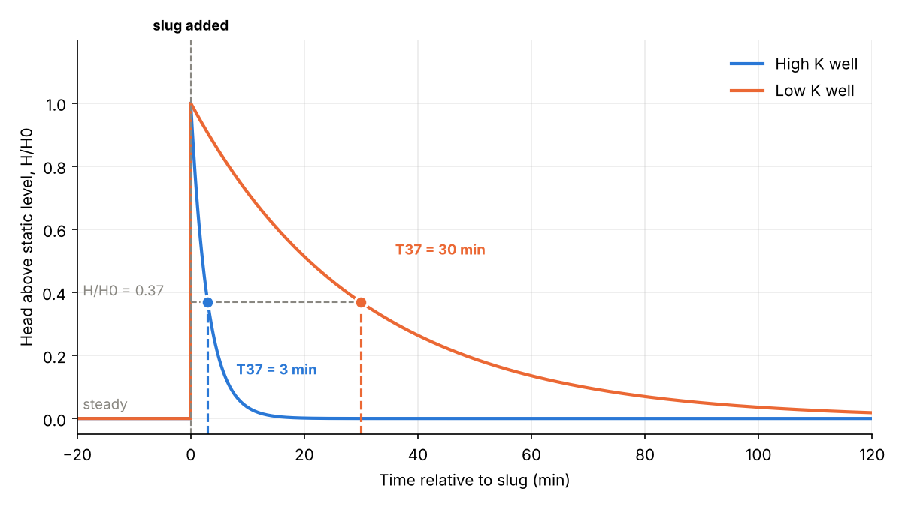
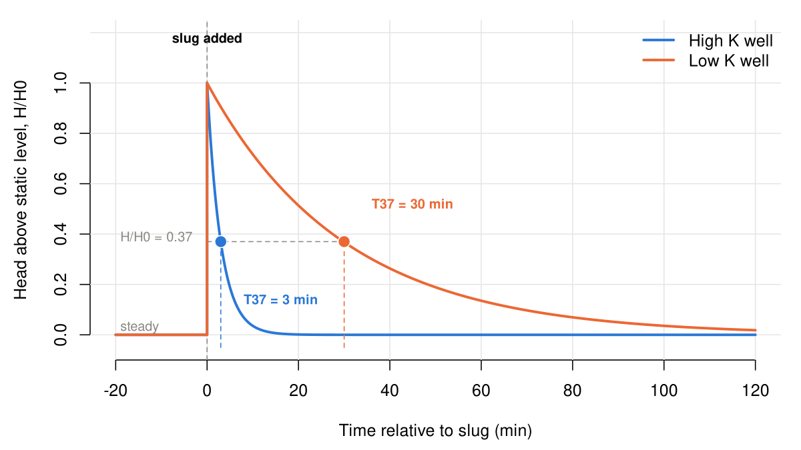
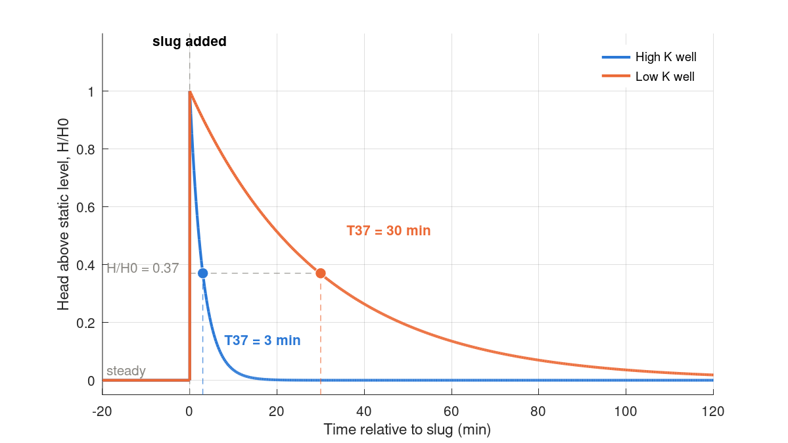

Chapter 8 · Groundwater
Slug test: normalized head recovery in high- and low-K wells
Hvorslev-type exponential head recovery for two wells (T37 = 3 and 30 min).
Source: Chapter 8 draft; author code (in a Word comment)
No external data file: values are small and embedded in the code.

Code: slug_test.py · image: figure_python.png

"""Chapter 8 - Idealized slug-test response (Hvorslev) for a high-K and a low-K well.
Code from a comment in the Groundwater draft (J. Gannon, 'code for this is below (claude)')."""
import numpy as np
import matplotlib.pyplot as plt
# ---- Parameters (edit these) ----
T37_HIGH = 3 # min, basic time lag for high-K well
T37_LOW = 30 # min, basic time lag for low-K well
tmin, tmax = -20, 120 # min relative to slug
BLUE, ORANGE, MUTED = "#2a78d6", "#eb6834", "#898781"
def response(T37, t_after):
"""Idealized Hvorslev response: steady before t=0, instant rise, then H/H0 = exp(-t/T37)."""
t = np.concatenate(([tmin, 0, 0], t_after))
h = np.concatenate(([0, 0, 1], np.exp(-t_after / T37)))
return t, h
t_after = np.linspace(0, tmax, 500)[1:]
fig, ax = plt.subplots(figsize=(8, 4.5))
for T37, color, label in [(T37_HIGH, BLUE, "High K well"), (T37_LOW, ORANGE, "Low K well")]:
t, h = response(T37, t_after)
ax.plot(t, h, color=color, lw=2, label=label)
ax.plot([T37, T37], [-0.05, 0.37], color=color, ls="--", lw=1.5)
ax.plot(T37, 0.37, "o", color=color, mec="white", mew=1.5, ms=8, zorder=5)
ax.axvline(0, color=MUTED, ls="--", lw=1)
ax.hlines(0.37, 0, T37_LOW, color=MUTED, ls="--", lw=1)
ax.text(0, 1.22, "slug added", ha="center", va="bottom", fontsize=9, fontweight="bold")
ax.text(8, 0.14, f"T37 = {T37_HIGH} min", color=BLUE, fontsize=9, fontweight="bold")
ax.text(36, 0.52, f"T37 = {T37_LOW} min", color=ORANGE, fontsize=9, fontweight="bold")
ax.text(tmin + 1, 0.39, "H/H0 = 0.37", color=MUTED, fontsize=9)
ax.text(tmin + 1, 0.03, "steady", color=MUTED, fontsize=9)
ax.set_xlim(tmin, tmax); ax.set_ylim(-0.05, 1.2)
ax.set_yticks(np.arange(0, 1.01, 0.2))
ax.set_xlabel("Time relative to slug (min)"); ax.set_ylabel("Head above static level, H/H0")
ax.grid(alpha=0.25)
ax.spines[["top", "right"]].set_visible(False)
ax.legend(frameon=False, loc="upper right")
fig.tight_layout()
fig.savefig("figure_python.png", dpi=150)

Code: slug_test.R · image: figure_r.png

# Chapter 8 - Idealized slug-test response (Hvorslev) for a high-K and a low-K well
T37_HIGH <- 3; T37_LOW <- 30 # min, basic time lag
tmin <- -20; tmax <- 120
BLUE <- "#2a78d6"; ORANGE <- "#eb6834"; MUTED <- "#898781"
response <- function(T37) { # steady, instant rise at t = 0, then H/H0 = exp(-t/T37)
ta <- seq(0, tmax, length.out = 500)[-1]
list(t = c(tmin, 0, 0, ta), h = c(0, 0, 1, exp(-ta / T37)))
}
png("figure_r.png", width = 1200, height = 675, res = 150)
par(mar = c(4.5, 4.5, 1, 1), bty = "n")
plot(NA, xlim = c(tmin, tmax), ylim = c(-0.05, 1.2), xlab = "Time relative to slug (min)", ylab = "Head above static level, H/H0", yaxt = "n")
axis(2, at = seq(0, 1, 0.2)); grid(col = "grey90", lty = 1)
abline(v = 0, lty = 2, col = MUTED); segments(0, 0.37, T37_LOW, 0.37, lty = 2, col = MUTED)
for (k in list(list(T37_HIGH, BLUE), list(T37_LOW, ORANGE))) {
r <- response(k[[1]]); lines(r$t, r$h, col = k[[2]], lwd = 2.5)
segments(k[[1]], -0.05, k[[1]], 0.37, lty = 2, col = k[[2]]); points(k[[1]], 0.37, pch = 21, bg = k[[2]], col = "white", cex = 1.6)
}
text(0, 1.2, "slug added", font = 2, cex = 0.8, adj = c(0.5, 1))
text(8, 0.14, sprintf("T37 = %d min", T37_HIGH), col = BLUE, font = 2, cex = 0.8, adj = 0)
text(36, 0.52, sprintf("T37 = %d min", T37_LOW), col = ORANGE, font = 2, cex = 0.8, adj = 0)
text(tmin + 1, 0.39, "H/H0 = 0.37", col = MUTED, cex = 0.8, adj = 0); text(tmin + 1, 0.03, "steady", col = MUTED, cex = 0.8, adj = 0)
legend("topright", bty = "n", lwd = 2.5, col = c(BLUE, ORANGE), legend = c("High K well", "Low K well"))
dev.off()

Code: slug_test.m · image: figure_matlab.png

% Chapter 8 - Idealized slug-test response (Hvorslev) for a high-K and a low-K well
T37_HIGH = 3; T37_LOW = 30; % min, basic time lag
tmin = -20; tmax = 120;
BLUE = [0.165 0.47 0.839]; ORANGE = [0.922 0.408 0.204]; MUTED = [0.537 0.529 0.506];
ta = linspace(0, tmax, 500); ta = ta(2:end);
fig = figure('Position', [100 100 800 450]); hold on
plot([0 0], [-0.05 1.2], '--', 'Color', MUTED); plot([0 T37_LOW], [0.37 0.37], '--', 'Color', MUTED);
T37s = [T37_HIGH T37_LOW]; cols = [BLUE; ORANGE]; h = zeros(1, 2);
for k = 1:2
t = [tmin 0 0 ta]; hh = [0 0 1 exp(-ta / T37s(k))];
h(k) = plot(t, hh, 'Color', cols(k,:), 'LineWidth', 2);
plot([T37s(k) T37s(k)], [-0.05 0.37], '--', 'Color', cols(k,:));
plot(T37s(k), 0.37, 'o', 'MarkerFaceColor', cols(k,:), 'MarkerEdgeColor', 'w', 'MarkerSize', 8);
end
text(0, 1.17, 'slug added', 'HorizontalAlignment', 'center', 'FontWeight', 'bold');
text(8, 0.14, sprintf('T37 = %d min', T37_HIGH), 'Color', BLUE, 'FontWeight', 'bold');
text(36, 0.52, sprintf('T37 = %d min', T37_LOW), 'Color', ORANGE, 'FontWeight', 'bold');
text(tmin + 1, 0.39, 'H/H0 = 0.37', 'Color', MUTED); text(tmin + 1, 0.03, 'steady', 'Color', MUTED);
xlim([tmin tmax]); ylim([-0.05 1.2]); set(gca, 'YTick', 0:0.2:1); grid on; box off
xlabel('Time relative to slug (min)'); ylabel('Head above static level, H/H0');
legend(h, {'High K well', 'Low K well'}, 'Location', 'northeast', 'Box', 'off');
print(fig, '-dpng', '-r150', 'figure_matlab.png');